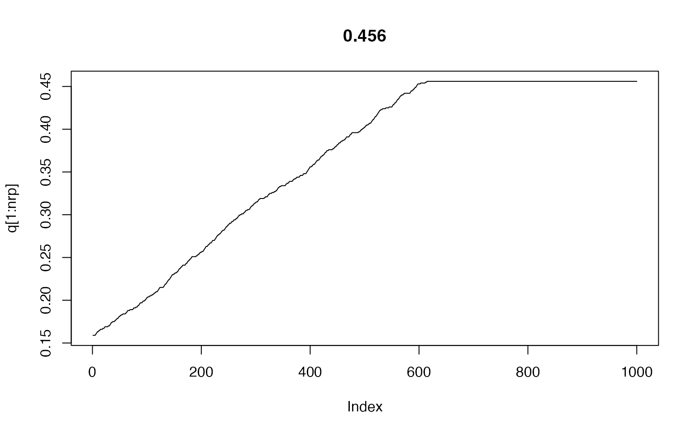
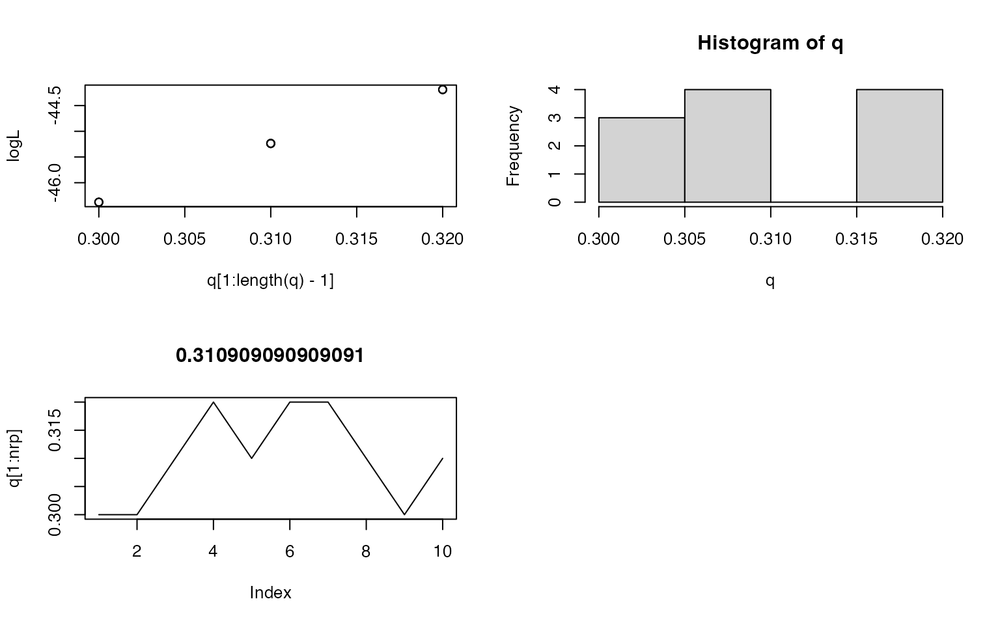

8章:マルコフ連鎖モンテカルロ(MCMC)法とベイズ統計モデル
- 7章ではGLMMの導入
- 7章は比較的単純なモデルだったので最尤推定法1で解析的にパラメータを求めることができた
- ランダム効果項が増えるごとに、パラメータ推定が困難に
- ランダム効果数分の多重積分
- 簡単に言うと、無理になる
- そこで登場するのがMCMC。MCMCを使って最尤推定量を出す。
- MCMCアルゴリズム
- データに適用することで、推定結果がある確率分布からのランダムサンプルとして得られる->MCMCサンプル
- MCMCサンプルを得る手続き->MCMCサンプリング
- MCMCアルゴリズム
- 8章の構成
- 前半: 試行錯誤による最尤推定
- 後半: 試行錯誤による方法をMCMCに改良。また、MCMCサンプリングによる結果を使うための方法の1つとしてベイズ統計モデルを紹介。
8-1 例題: 種子の生存確率（個体差なし）
- 図8-1: 単純な例
- ある個体\(i\)から8個の種子を観察
- 生存種子数をカウント
- 2項分布に従うやつ
- 20個体調べた
- \(\{y_1,y_2,...,y_{20}\}=\{4,3,4,5,5,2,3,1,4,0,1,5,5,6,5,4,4,5,3,4\}\)
- このとき、種子個体iの生存確率qは?
- ある個体\(i\)の生存種子数が\(y_i\)である確率（ヒストグラム（図8.1右）を見ると過分散ではないので、二項分布に従うと考える（＝統計モデル）
- ただしパラメータqは不明なので、データからそれを求める
- 統計モデル: \(p(y_i|q)=\binom{8}{y_i}q^{y_1}(1-q)^{8-{y_1}}\)
- 尤度関数：\(L(q)=p(\mathbf{Y}|q)=\prod_i
p(y_i|q)\)（パラメータqのときデータ\(y_i\)が得られる確率の総乗）
- ここで本でY（この資料ではイタリックになってないけど）と表されているのは応答変数yの集合という意味（P11）。パラメータqのときに\(y_1\)になる確率それぞれ、という意味になるので、その相乗となる。
- qが変化すると尤度（モデルのもっともらしさ）が変化する。→尤度が最大になるqを求めればいい。これが真の値の推定値（頻度主義だから真の値がある）\(\hat{q}\)（qハット）=最尤推定量
- 対数尤度関数：\(logL(q) = \Sigma_i\{y_ilog\ q+(8-y_i)\ log(1-q)\}+定数\)（図8.2）
- このとき、\(logL(q)\)を最大にするqの値は、傾き（\(\frac{dLogL(q)}{dq}\)）が0となるところ
- そこで、対数尤度関数の右辺をqで偏微分する
- まずシグマを分割する（参考ページ
- 対数尤度関数=\(\Sigma_iy_ilog\ q+(8\times 20-\Sigma_iy_i)log(1-q)+定数\) 突然出てくる20は20個体観察する例題だから\(\Sigma_q^{20}8\)ということ
- qで微分する
- \(log\ q\)は\(\frac{1}{q}\)になる
- \(log(1-q)\)は\(-\frac{1}{1-q}\)になる
- \(\frac{\partial}{\partial q}logL(q)=\frac{\Sigma_iy_i}{q}-\frac{8\times 20-\Sigma_iy_i}{1-q}\)
- \(\frac{\partial}{\partial
q}logL(q)\)が0になるqを知りたいので、
- \(\frac{\Sigma_iy_i}{q}-\frac{8\times 20-\Sigma_iy_i}{1-q}=0\)
- \(\frac{\Sigma_iy_i}{q}\) = \(\frac{8\times 20-\Sigma_iy_i}{1-q}\)
- \(\Sigma_i y_i-q\Sigma_iy_i=8\times20\times q-q\Sigma_iy_i\)
- \(q=\frac{\Sigma_iy_i}{8\times20}\)
- \(q=0.45625\)
- まずシグマを分割する（参考ページ
- 以上が解析的な最尤推定
8-2 ふらふら試行錯誤による最尤推定
- 8-1のように解析的な方法でパラメータを求められないとしたらどうするか
- 試行錯誤的に\(q\)を変化させ、対数尤度が高くなる最尤推定地\(\hat{q}\)を求める
- 効率も精度も悪いけど、理解しやすい手順
- \(q\)を離散化→\(q\)を連続値ではなく\(0.01\)刻みの離散値と考える
- 適当な\(q\)の初期値を決め、対数尤度を計算して評価。対数尤度関数に代入するだけ。パラメータは\(q\)だけだから計算可能。\(q=0.30\)の場合、\(-46.38\)になる。
- 以下は「ふらふら試行錯誤の最尤推定」ルール
- \(q\)はとなりの値にしか変化できない（ここで「となりの値」という考え方をするために、\(q\)を離散化したのだと思う）->0.30スタートなら0.29か0.31
- 2つの値のうちどちらを選ぶかはランダムに決定する
- 新しい対数尤度が現在よりも大きければそちらに移動
- 0.31が選ばれた場合、対数尤度は-45.24となり、大きいから採用される -> \(q\)は0.31になる
- 仮に0.29が選ばれていれば、対数尤度は-47.62で小さくなってるので、\(q\)は0.30に戻る
- 下は適当に実装してみた例。初期値を変えても同じ値に収束するのがわかる。
- このアルゴリズムは次のメトロポリス法の基になるので、作ってみると良いです
- 本では\(q\)を0.01刻みで動かしてるけど、下では0.001刻みにしている。緑本の例のように100回では収束せず600回くらいかかってるけど、当然収束した値は、より真の値に近づく。
nrp<-1000 # 繰り返し数
qi<-0.159 # qの初期値
n<-8 # 観測種子数
data<-matrix(c(4,3,4,5,5,2,3,1,4,0,1,5,5,6,5,4,4,5,3,4)) # 観測された生存種子数（＝データ）
logL<-numeric(nrp) # 行列logL初期化
q<-qi # 行列qの1つめに初期値を代入
# 以下繰り返し。値を更新しながら繰り返すのでapply系関数は使えないと思う
for (rp in 1:nrp){
# q[rp]を用いて対数尤度の算出
# 観測されたデータごとに二項分布を使って条件つき確率を計算。apply関数を使うことで繰り返し文を使わないようにしている
lh<-apply(data,2,function(x){
lhd<-choose(n,x)*q[rp]^x*(1-q[rp])^(n-x)
return(lhd)
})
logL[rp]<-log(prod(lh)) # 確率の総乗が尤度、その対数をとって対数尤度
# 繰り返しの2回目以降はqを変化させたときに対数尤度が高くなっていた場合のみ、そのqを採用
if (rp>1){
if (logL[rp]<logL[rp-1]){
q[rp]<-q[rp-1]
logL[rp]<-logL[rp-1]
}
}
# 次のqはランダムに正負どちらかの隣を選ぶ
if (round(runif(1))){
q[rp+1]<-q[rp]+0.001
}else{
q[rp+1]<-q[rp]-0.001
}
}
plot(q[1:nrp],type='l', main=q[nrp]) # 結果をグラフに
8.3 MCMCアルゴリズムのひとつ：メトリポリス法
- もっとも簡単なMCMCアルゴリズム
- 8.2でやった「ふらふら推定」アルゴリズムに1つのルールを追加
- qはとなりの値にしか変化できない（ここで「となりの値」という考え方をするために、qを離散化したのだと思う）->0.30スタートなら0.29か0.31
- 2つの値のうちどちらを選ぶかはランダムに決定する
- 対数尤度が現在よりも大きければそちらに移動
- 【新】新しいqで算出した尤度が小さくなってても、確率rでそれを採用
- \(r=\frac{L(q^新)}{L(q^)}\)とする
- 本に書いてる例
- q=30のとき、q=0.29が選ばれた場合
- 対数尤度は-46.38から-47.72に下がる
- 新しいアルゴリズムでは尤度比(\(exp(-47.62+46.38)=0.29\))の確率で新しい値を採用（-47.62などの数値は対数尤度なのでexpで元に戻す）
- 「ふらふら」では採用確率0
- 尤度比が小さいと採用しにくいんだけど、0ではないという違い
- この、前の状態に基づいて新しい値を作るのがマルコフ連鎖
- 乱数を利用した計算アルゴリズムがモンテカルロ法, 手順2と4で乱数を使ってるから、これはモンテカルロ法
- q=30のとき、q=0.29が選ばれた場合
8.3.1 メトロポリス法でサンプリングしてみる
- やってみる
- まずは10回分の変化（図8.6）
- 次に100回分（図8.7）、図8.8では最大10万回分
- 図8.8
- 左：ステップごとのqの変化
- 右ヒストグラム：qのヒストグラム
- 右直線：マルコフ連鎖の定常分布
- 「ふらふら」とメトロポリス法の違い
- メトロポリス法は最大対数尤度に達するまでに時間がかかり、達した後も変化する
- 「どこか一番いい値」に到達しない
- メトロポリス法は最大対数尤度に達するまでに時間がかかり、達した後も変化する
- MCMCの目的は値の探索ではなく、パラメータ値の生成＝サンプリング
- 8.8に示されるように、ステップ数が十分増えると、ある確率分布に似てくる。この確率分布がマルコフ連鎖の定常分布
layout(matrix(1:4, ncol=2, nrow=2))
nrp<-10 # 繰り返し数。ここと次の行の初期値を変えて色々試してみることになる。
qi<-0.30
n<-8
data<-matrix(c(4,3,4,5,5,2,3,1,4,0,1,5,5,6,5,4,4,5,3,4))
logL<-numeric(nrp) # 行列logL初期化
q<-qi
lr<-1
for (rp in 1:nrp){
# q[rp]を用いて対数尤度の算出
lh<-apply(data,2,function(x){
lhd<-choose(n,x)*q[rp]^x*(1-q[rp])^(n-x)
return(lhd)
})
logL[rp]<-log(prod(lh))
# 対数尤度の比較。ここだけ新しくなってる
if (rp>1){
lr<-exp(logL[rp]-logL[rp-1]) # 尤度比
if (runif(1)>lr){ # 尤度比の確率で新しいqを採用(尤度比lrを閾値とし、0-1範囲の乱数がそれを超えなかったら採用しない)
q[rp]<-q[rp-1]
logL[rp]<-logL[rp-1]
}
}
# qの増減をランダムに決定
if (round(runif(1))){
q[rp+1]<-min(0.99,q[rp]+0.01)
}else{
q[rp+1]<-max(0.01,q[rp]-0.01)
}
}
print(q)## [1] 0.30 0.30 0.31 0.32 0.31 0.32 0.32 0.31 0.30 0.31 0.32plot(q[1:length(q)-1],logL)
plot(q[1:nrp],type='l', main=mean(q))
hist(q)
8.3.2 マルコフ連鎖の定常分布
- 定常分布：ある変数qのマルコフ連鎖が一定の条件2を満たすとき、発生するqが従う確率分布
- 「一定の条件」は補足でちょっと出てくる。詳しくは脚注の本。
- ここでは、メトロポリス法によるマルコフ連鎖は条件を満たしていると考える
- ステップ数が小さいと定常分布と全然違う
- ステップ数を増やすと定常分布に近づく
- なぜ？
- qの初期値が適当
- qがちょっとずつしか変化しない
- ただし、どういうqから始めてもそのうち定常分布に従うようになりそう（図8.9）
- 十分な数のステップ（MCMCサンプリング）が必要
- 図8.8でみると1000では不十分
- qが前のqと相関
- 今回の場合10万ステップ必要
- いろいろな工夫がされている
- ステップ間でのサンプルの相関を下げる
- このあたりは次章以降でも検討と書いているけど、実際にはStanの設定などでやるところと思われる
8.3.3 この定常分布は何をあらわす分布なのか？
- 定常分布\(p(q|\mathbf{Y})\)
- 尤度\(L(q)\)に比例する確率分布
- \(p(q|\mathbf{Y})=\frac{L(q)}{\Sigma_qL(q)}\)
- 突然出てくる感じがする。定義だから仕方ない？
- 分子：あるパラメータqのときの尤度
- 分母：尤度の総和
- この比がデータYという条件のもとで、パラメータがqであるという確率分布、という意味。尤度に従って確率が変化する、と考えるとまあ納得できる感じもする。
- 分母は全てのL(q)の和, データ\(\mathbf{Y}\)にだけ依存する定数なので、
- 突然出てくる感じがする。定義だから仕方ない？
- \(p(q|\mathbf{Y})\propto L(q)\) と表せる
- \(p(q|\mathbf{Y})=\frac{L(q)}{\Sigma_qL(q)}\)
- メトリポリス法で得られた十分に長いMCMCサンプルは、定常分布\(p(q|\mathbf{Y})\)からのランダムサンプル
- 尤度\(L(q)\)に比例する確率分布
- ここまでのまとめ
- 観測データ\(\mathbf{Y}\)を説明するために統計モデルを作成（二項分布を使用）
- モデルとメトロポリス法を使ってMCMCサンプリングをすることで、尤度に比例するqの確率分布\(p(q|\mathbf{Y})\)を推定できるサンプルを入手
- \(p(q|\mathbf{Y})\)は\(L(q)\)に比例するので、データに統計モデルを当てはめたときのqの値の確率分布と言える
- つまり、MCMCサンプリングは統計モデルのあてはめ
- MCMCサンプルの統計量を示すことも可能
8.4 MCMCサンプリングとベイズ統計モデル
- MCMCサンプリング：モデルをデータに当てはめる方法の1つ
- 結果としてパラメータの確率分布が得られる
- ただし
- 「パラメータの確率分布」という言葉は頻度主義の考え方では使えない
- 頻度主義ではパラメータには真の値があるから。最尤推定法ではその値を推定していた。
- 頻度主義ではパラメータは確率変数ではない
- 「パラメータの確率分布」という言葉は頻度主義の考え方では使えない
- パラメータを確率分布として扱う考え方はないのか？
- ある。ベイズ統計学。
- ベイズ統計学の統計モデルでは、パラメータは確率分布として表現される
- ということで、考え方をがらっと変えて、今使ってる例題をベイズ統計学で考えてみる
- ベイズ統計＝ベイズの公式の形式で推論を行う
- ベイズの公式：条件つき確率の性質を記述する等式（8.5.2で）
- 種子の例
- \(p(q|\mathbf{Y})=\frac{p(\mathbf{Y}|q)p(q)}{\Sigma_qp(\mathbf{Y}|q)p(q)}\)
- 左辺：データ\(\mathbf{Y}\)が得られたとき、\(q\)が従う確率分布（ベイズでは事後分布）MCMCで得た事後分布に相当
- 右辺の分子
- 最初の項\(p(\mathbf{Y})|q)\)：qが決まっているときに\(\mathbf{Y}\)が得られる確率。今の例では尤度\(L(q)\)。なぜなら、尤度\(L(q)\)は、色々なqのときに各データが得られる条件つき確率の相乗だから。
- 次の項\(p(q)\)：データ\(\mathbf{Y}\)がないときの\(q\)の確率分布（ベイズでは事前分布,prior）。条件つきではないqの確率分布。そんなものあるの？と思うのが普通。
- 右辺の分母
- 規格化のための定数？：確率の積である右辺の分子の和なので、右辺の計算結果を全部足すと1になることになる。つまり、左辺確率分布の和を1にできる。それが規格化のための定数という意味。
- また、\(p(\mathbf{Y}|q)\)が「あるqで\(\mathbf{Y}\)となる確率」ということは、「それと\(p(q)\)つまり\(q\)がその値を取る確率の積」の和は\(p(\mathbf{Y})\)（あるデータ\(\mathbf{Y}\)が得られる確率。qに関しては足し合わせちゃってるからqとは関係ない定数。
- つまり分母は\(q\)に関係のない定数
- これで\(事後分布=\frac{尤度\times 事前分布}{データが得られる確率}\propto尤度\times事前分布\)が出てくる
- 8.3.3では定常分布\(p(q|\mathbf{Y})\)は\(\frac{L(q)}{\Sigma(L(q))}\)であることを示した
- 右辺の分母は定数だったので、定常分布は尤度に比例する
- ベイズの公式から今導いたのも似てて、事後分布は尤度と事前分布の積に比例する
- 事前分布\(p(q)\)が一定だったりすると、8.3.3の話とぴったり
- 実際には尤度や事前分布はきっちり指定する
8.5 補足説明
8.5.1 メトロポリス法と定常分布の関係
- なぜメトロポリス法に従うことで、定常分布からのランダムサンプリングになるのか
- 定常分布からのサンプリングとなる条件
- qが任意の初期値から定常分布\(p(q|\mathbf{Y})\)に収束する
- あるqが\(p(q|\mathbf{Y})\)に従っていて、メトロポリス法で得た\(q^新\)も\(p(q|\mathbf{Y})\)に従っている
- 以下で2について検討
- 新しい\(q^新\)で尤度がよくなる変化と悪くなる変化に分けて考える
- \(q^新\)で尤度が改善される場合
- \(q\)から\(q^新\)になる確率\(p(q->q^新=0.5\times1\)：最初の0.5はその\(q^新\)になる確率(1/2)、この場合尤度は改善しているので新になるのは1、だから\(0.5\times1\)
- 逆にある\(q^新\)から\(q\)になる確率\(p(q^新->q)=0.5\times\frac{L(q)}{L(q^新)}\)：この変化では尤度は悪くなってるはずなので、0.5に尤度比をかける
- 2つの式から次の式が成り立つ：\(L(q^新)p(q^新->q)=L(q)p(q->q^新)\)
- 定常分布\(p(q|\mathbf{Y})\)は\(\frac{L(q)}{\Sigma L(q)}\)と表せ、分母は定数なので、1つ前の式は\(p(q^新|\mathbf{Y})p(q^新->q)=p(q|\mathbf{Y})p(q->q^新)\)と書ける
- \(q^新\)で尤度が改善される場合
- \(q^新\)で尤度が悪くなる場合
- \(p(q->q^新)=0.5\times\frac{L(q)}{L(q^新)}\)
- \(p(q^新->q)=0.5\times1\)
- 結局同じ式は\(p(q^新|\mathbf{Y})p(q^新->q)=p(q|\mathbf{Y})p(q->q^新)\)が成立
- 詳細釣り合いの条件
- 両辺に関して、qについての和を取る
- \(\Sigma_q
p(q^新|\mathbf{Y})p(q^新->q)=\Sigma_qp(q|\mathbf{Y})p(q->q^新)\)
- 左辺の\(p(q^新|\mathbf{Y})\)はqについての和とは無関係ここ理解できない
- \(\Sigma_qp(q^新->q)=1\)これはわかる
- 右辺はqが定常分布に従ってるときに\(q\)が\(q^新\)になる確率 これもわからない
- ということで、ここは理解できていない
- \(\Sigma_q
p(q^新|\mathbf{Y})p(q^新->q)=\Sigma_qp(q|\mathbf{Y})p(q->q^新)\)
- 新しい\(q^新\)で尤度がよくなる変化と悪くなる変化に分けて考える
8.5.2 ベイズの定理
- ベイズの定理：\(p(q|\mathbf{Y})=\frac{p(\mathbf{Y}|q)p(q)}{\Sigma_qp(\mathbf{Y}|q)p(q)}\)
データ\(\mathbf{Y}\)が得られたときにパラメータ\(q\)である確率は、パラメータ\(q\)であるときにデータ\(\mathbf{Y}\)が得られる確率とパラメータが\(q\)である確率の積(ここまで分子)を分子を全て足し合わせたもので割った値に等しい
- これは条件つき確率と同時確率の関係（\(p(A|B)p(B)=p(A,B)\)：Bが起きたときにAが起きる確率とBが起きる確率の積はAとBが同時に起きる確率に等しい）を整理したもの
- 例題で考えてみる
- qは離散化されていて、0.01から0.99のような値を取る
- \(\mathbf{Y}\)はデータなので値は決まっている
- 条件つき確率と同時確率の定義から、あるデータYのときにパラメータqがある値を取る確率は
- \(p(q|Y)p(q)=p(Y,q)\)
- \(p(q|Y)=\frac{p(Y,q)}{p(Y)}\)
- \(p(Y,q)\)は\(p(Y|q)p(q)\)とも書けるので、
- \(p(q|Y)=\frac{p(Y|q)p(q)}{p(Y)}\)とベイズの公式が出てくる
- P(Y|q)p(q)とP(q|Y)p(Y)は同じ
- 分母を書き換えると最初の式（同時確率をqについて足してる）。
尤度関数を最大化させるパラメータを最尤推定量とする方法。最尤推定すること一般を指すわけではない。伊丸岡は割と今まで誤解していた（モデルが複雑になると最尤推定できないと思っていただけど、そうではない）。と、思ったけど、最尤推定するための方法一般を最尤推定法と呼んでいる例もある（緑本P170の下から7行目「（効率のよくない）試行錯誤による最尤推定法を紹介する」もそう。Wikipediaの最尤推定もそうかもしれない（最尤推定という項目だから当たり前かもしれないけど）。ただ、そうはない例もあって例えばここ。最尤推定法は「真値が1つだけど、データはいろいろな理由で変化する、という頻度論による発想」に基づくと言っていて、ここにはMCMCを使った方法は入らないのは明らか。また、緑本のP185の説明でも「最尤推定法によるパラメーター推定は、統計学のわくぐみのひとつである頻度主義を前提にしているといえます」とあるので、P170の書き方が例外なのかも。↩︎